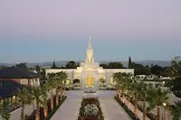
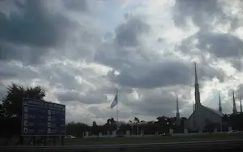

Argentina Temples Album
Home
New
Old
Small
Large
Temples - Home Page
Argentina
Buenos Aires, Argentina
Buenos Aires City Center, Argentina

Cordoba, Argentina
Salta, Argentina
Mendoza, Argentina
Bahia Blanca, Argentina
Rosario, Argentina

Buenos Aires, Argentina
Buenos Aires, Argentina